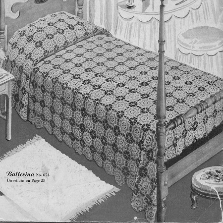
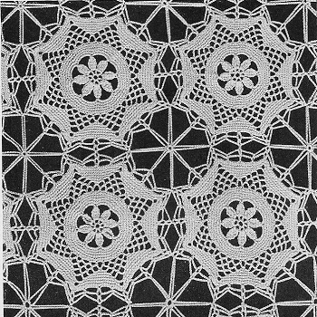

Ballerina Bedspread pattern
This enchanting bedspread is not only a functional piece but also a work of art that showcases the beauty of crochet and the magic of ballet. It brings joy and inspiration, allowing one to dream and imagine themselves twirling alongside the ballerinas.
MATERIALS:
Use one of the following threads in size 20, White or Ecru: CLARK'S O.N.T. or J. & P. COATS BIG BALL BEST SIX CORD MERCERIZED CROCHET, 51 balls for single size spread,' 61 balls for double size spread.
CLARK'S BIG BALL MERCERIZED CROCHET, 36 balls for single size spread,. 43 balls for double size spread.
MILWARD'S steel crochet hook No. 10.
GAUGE: Each motif measures 5 inches in diameter. For a single size spread, about 75 x 105 inches, make 15 x 21 motifs. For a double size spread, about 90 x 105 inches, make 18 x 21 motifs.
MOTIF: Starting at center, ch 8, join with sl st.
1st rnd: Ch 5, * dc in ring, ch 2. Repeat from * 6 more times. Join to 3rd st of ch-5 (8 sps).
2nd rnd: Sl st in next sp, ch 5, 4 dtr in same sp, holding back the last loop of each dtr on hook; thread over and draw through all loops on hook (a cluster); * ch 8, 5 dtr in next sp, holding back the last loop of each dtr on hook; thread over and draw through all loops on hook (cluster). Repeat from * around, ending with ch 8, sl st at tip of 1st cluster made,
3rd rnd: 10 sc in each sp (80 sc in rnd).
4th to 7th rnds incl: Sc in each sc, ending 7th rnd with sl st in next st.
8th rnd: Ch 5, skip 1 st, sc in next st, ch 5, skip 2 sts, sc in next st. Repeat from * around (32 loops).
9th rnd: Sl st to center of next loop, 2 sc in loop, * ch 5, sc in next loop. Repeat from * 2 more times, ch 5, 2 sc in next loop, and continue thus around, ending with sl st in 1st sc made.
10th rnd: Ch 1, sc in next 2 sc, * 2 sc in next loop; (ch 5, sc in next loop) twice, ch 5, 2 sc in next loop, sc in next 2 sc. Repeat from * around, ending with 2 sc in last loop, sl st in ch-1 first made.
11th rnd: Ch 1, sc in next 4 sc, * 2 sc in next loop, ch 5, sc in next loop, ch 5, 2 sc in next loop, sc in next 6 sc. Repeat from * around, ending with sl st in ch-1 first made.
12th rnd: Ch 1, sc in next 6 sc, * 2 sc in next loop, ch 7, 2 sc in next loop, sc in next 10 sc. Repeat from * around, ending rnd as before.
13th rnd: Ch 1, sc in next 8 sc, * in ch-7 loop make 2 sc, ch 5, 2 sc; sc in next 14 sc. Repeat from * around; join.
14th rnd: Ch 1, sc in each sc, making 5 sc in each ch-5 loop; join.
15th rnd: Ch 1, sc in each sc, making 2 sc in center st of 5-sc group; join.
16th rnd: Sc in next sc, ch 6 (to count as dc and ch-3), dc in same place as last sc, ch 6, skip 5 sc, sc in next sc, ch 6; in center sc at tip of next point make dc, ch 3, dc; ch 6, skip 5 sc, sc in next sc, ch 6, skip 5 sc; in next sc make dc, ch 3, dc. Repeat from * around, joining last ch-6 to 3rd st of ch-6 first made.
17th rnd: Sl st in next ch, sc in sp, ch 6, dc in same sp, * ch 6, sc in next sc, ch 7; in sp at point make dc, ch 3, dc; ch 7, sc in next sc, ch 6; in next sp make dc, ch 3, dc. Repeat from * around. Join and fasten off. Make necessary number of motifs.
With over-and-over stitches sew 3 points of one motif (see illustration) to corresponding 3 points of adjacent motifs, thus leaving 1 point free on each motif between joinings.
FILL-IN LACE: Ch 10, join to form ring. * Ch 11, sl st in a free point between joinings; ch 11, sc back in ring. Ch 16, sl st in joining; ch 16, sc in ring. Repeat from * 3 more times. Join and fasten off. Fill in all spaces between joinings in same manner.

HOME